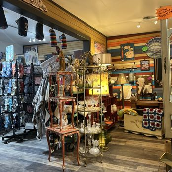

Used books & art
The browse-anchor — rotating used books plus small art pieces.
- Used books
- Art
- Small framed work
A used book is the most portable pickup here — pick one on the way through.
Cloudcroft's rummage-and-discover retail stop — used books, vintage, antiques, upcycled furniture, outdoor gear, blankets, Bigfoot items, and souvenirs all under one Burro Avenue roof.
The Burro Avenue shop that takes its name seriously — poke around, see what turns up, and accept that this is not the place for a specific-item shopping list.
The Cloudcroft Chamber listing names more categories than most shops would try to carry. Inventory rotates constantly — don't drive up expecting a specific piece you saw once.
"A used book. The most portable rummage pickup — you'll find something you didn't plan to carry home."
A used book
"Something from the Bigfoot section. Cloudcroft has a Bigfoot mythology, this shop leans into it — and the item travels as a story."
A Bigfoot item
"A vintage lamp, a small piece of upcycled furniture, or an antique with character. Ask the story — the shop answers in specifics."
Vintage or upcycled piece
The shop's hours aren't posted to a consistent public source. Expect variable small-town hours, typical for a vintage/rummage shop. Call before timing a visit.
We won't publish hours we can't stand behind. No official website or posted schedule is available in current crawlable sources. The phone call is the honest answer.
On the main Burro Avenue walkable strip. A full official street number isn't cleanly confirmed in current sources — the shop is easy to find walking the avenue.
Burro Avenue
Cloudcroft, NM 88317
On the main walkable strip. Exact street number isn't cleanly confirmed from a business-controlled source; the shop is easy to spot on foot.
Phone: (575) 682-1341
Email: ptbear510@yahoo.com
Storefront and interior glimpses of the rummage-style browse.



No posted weekly schedule available in current sources. Call (575) 682-1341 or email ptbear510@yahoo.com before timing a visit.
Rummage and vintage shops rotate inventory constantly. Photos on this page represent the shop's character, not a catalog of current stock — don't plan around a specific piece.
Full official street number, current social accounts, and e-commerce / shipping policies aren't confirmed in current sources. The Chamber page and Explore Cloudcroft listing confirm the business itself plus the phone and email.
On-street parking along Burro. Card and cash standard (standard small-shop assumption). Specific accessibility details aren't documented.
"Poke The Bear is the exact kind of Burro Avenue shop that makes a Cloudcroft trip memorable for the wrong-in-the-best-way reasons. Don't bring a list. Walk in, let the shop show you what it has, and leave with whatever made you smile. The name is the whole brief."
Three peer shops on the same walkable strip.